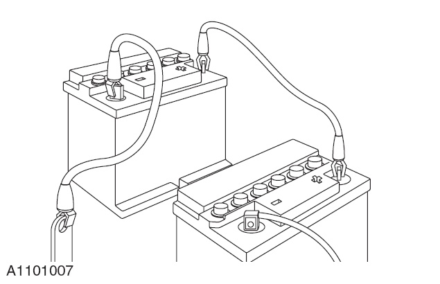

При ремонте автомобиля в ремонтной мастерской необходимо обеспечить:
Задействовать стояночный тормоз или зафиксировать колеса для предотвращения движения автомобиля вперед или назад.
При выполнении работ в передней части автомобиля извлечь ключ зажигания.
При необходимости запуска двигателя автомобиля обеспечить хорошую вентиляцию помещения или использовать систему вытяжки отработавших газов.
При необходимости обеспечить достаточное пространство для подъема автомобиля и замены шин.
При выполнении ремонта в отсеке электродвигателя использовать защитные накидки на крылья.
Перед ремонтом электродвигателя, ремонтом под автомобилем или подъемом автомобиля отключить питание от аккумуляторной батареи.
При выполнении дуговой сварки на автомобиле сначала отсоединить жгут проводов генератора, чтобы избежать возможного повреждения внутренних компонентов генератора чрезмерным током.
При использовании сварочного оборудования на автомобиле разместить поблизости огнетушитель.
В процессе буксировки автомобиля перевести автомобиль в режим "P", нажать педаль тормоза, на центральном дисплее нажать виртуальную кнопку «Автомобиль → Безопасность и техническое обслуживание → Режим буксировки», после нажатия кнопки подтверждения во всплывающем окне автомобиль перейдет в режим буксировки; только в этом случае указатели поворота, звуковой сигнал и стоп-сигналы смогут работать нормально, в противном случае это может привести к травмам.
Съемная буксировочная проушина имеет левую резьбу и перед буксировкой автомобиля должна быть полностью затянута. При необходимости буксировки автомобиля следует использовать буксировочную проушину. Буксировочный трос должен быть надежно закреплен на проушине и присоединен к другому автомобилю во избежание запутывания троса вокруг кузова.
При буксировке автомобиля с автоматической коробкой передач скорость буксировки ни в коем случае не должна превышать 40 km/h, а расстояние буксировки — 25 km. При необходимости буксировки автомобиля на большие расстояния ведущие колеса должны быть полностью оторваны от земли.
Для транспортировки автомобиля можно использовать низкорамный эвакуатор или буксировщик.
При использовании внешнего устройства для запуска двигателя убедиться, что положительный полюс внешнего источника питания подключен к положительному полюсу "+" аккумуляторной батареи, а минус питания внешнего источника подключен к отрицательному полюсу "-" аккумуляторной батареи; несоблюдение этой процедуры может привести к неустранимой неисправности автомобиля.
Если вспомогательная аккумуляторная батарея была заряжена и выделяла газ, при подключении пусковых проводов следует закрыть вентиляционные отверстия пробками или влажной тканью, чтобы снизить опасность взрыва из-за искрения при подключении пусковых проводов. Несоблюдение этой процедуры может привести к травмам.
Короткое замыкание приводит к разряду аккумуляторной батареи; при наличии явления разряда в автомобиле остаются цепи под напряжением после отключения нормальных цепей. Подключение пусковых проводов в этом случае приведет к деформации корпуса аккумуляторной батареи.
Если автомобиль не заводится, запуск от внешнего источника можно считать единственным возможным способом запуска автомобиля. В этом случае после запуска разряженную аккумуляторную батарею необходимо немедленно зарядить, чтобы избежать необратимых повреждений.
Необходимо проверить способность пусковых проводов выдерживать нагрузку; обязательно использовать провода для высоких нагрузок.
Необходимо убедиться, что вспомогательная аккумуляторная батарея имеет такое же напряжение, как и аккумуляторная батарея автомобиля. Обе аккумуляторные батареи должны быть подключены параллельно.
Перед подключением пусковых проводов необходимо убедиться, что цепи, управляемые выключателями, разомкнуты. Таким образом, при выполнении окончательного подключения снижается опасность возникновения электрической дуги.

При подключении проводов к аккумуляторной батарее необходимо убедиться, что концы пусковых проводов не соприкасаются друг с другом или не имеют заземления через кузов автомобиля. Полностью заряженная аккумуляторная батарея при коротком замыкании через пусковые провода может разряжаться током свыше 1000 A и создавать сильную электрическую дугу. Быстрый нагрев пусковых проводов и клемм может даже привести к взрыву аккумуляторной батареи. Несоблюдение этого правила приведет к травмам.
Подключение пусковых проводов необходимо выполнять в следующем порядке:
Сначала подключить положительный полюс вспомогательной аккумуляторной батареи, затем положительный полюс аккумуляторной батареи автомобиля.
Подключить к отрицательному полюсу вспомогательной аккумуляторной батареи, затем другой конец подключить к точке заземления на расстоянии не менее 300 mm от клеммы аккумуляторной батареи автомобиля, например, к подъемной проушине электродвигателя.
Перед отсоединением пусковых проводов следует снизить обороты двигателя. Перед снятием пусковых проводов с автомобиля с не полностью заряженной аккумуляторной батареей включить вентилятор отопителя или обогрев заднего стекла, чтобы снизить высокое напряжение, возникающее при отсоединении пусковых проводов.
Снять пусковые провода в порядке, обратном подключению, ни в коем случае не допускать короткого замыкания концов пусковых проводов.
Нельзя полагаться на генератор для восстановления заряда аккумуляторной батареи. Так как для зарядки с помощью генератора необходимо, чтобы двигатель непрерывно работал более 8 h при отсутствии какой-либо другой нагрузки на аккумуляторную батарею.
Во избежание загрязнения входных отверстий перед снятием соединительных проводов следует удалить скопления грязи и смазки, разобрать компоненты или узлы. При повторной сборке следует тщательно очистить детали, а затем проверить и собрать их.
Методы очистки:
Сухая очистка
Удалить скопления грязи мягкой щеткой.
Соскрести грязь металлическим или деревянным скребком.
Протереть ветошью.
Сжатый воздух иногда имеет высокое содержание влаги, на что следует обратить особое внимание, особенно при использовании для гидравлических систем.
Очистить грязь сжатым воздухом. (При использовании этого метода следует надевать защитные очки)
Очистить сухую пыль пылесосом. Этот метод часто используется для очистки пыли от фрикционных накладок.
Очистка паром.
Большинство растворителей опасны для человека и требуют осторожного обращения. См. "Меры предосторожности в области охраны здоровья и безопасности" и инструкции производителя по технике безопасности. Несоблюдение этого правила может привести к травмам.
Существует множество растворителей, подходящих для очистки компонентов. Некоторые компоненты, такие как гидравлические элементы тормозной системы, электрические узлы и т. д., должны очищаться с помощью специальных чистящих средств.
Несоблюдение следующих рекомендаций приведет к травмам или повреждению компонентов.
Некоторые важные устройства чрезвычайно важны, например: динамометрические ключи, мультиметры, газоанализаторы и диагностические кабели; такое оборудование необходимо регулярно калибровать в соответствии с инструкциями производителя.
При использовании всех растворителей, герметиков и клеев следует соблюдать крайнюю осторожность. Некоторые химические вещества или летучие аэрозоли представляют угрозу для здоровья человека. Пожалуйста, строго следуйте инструкциям производителя, категорически запрещается использовать любые вещества, вызывающие сомнения в их безопасности.
В случае сомнений относительно применимости любого специального растворителя или герметика, свяжитесь с производителем по вопросам хранения, обработки и применения данного вещества.
В подразделе "Меры предосторожности в области охраны здоровья и безопасности" представлена информация о некоторых часто используемых химических веществах, опасных материалах, способах их использования и соответствующих мерах безопасности, которые необходимо соблюдать.
Во многих случаях необходимо проводить дорожные испытания или испытания автомобиля на роликовом стенде. Ниже приведено подробное описание процедур проверки перед испытаниями, от запуска и остановки двигателя, проверки перед началом движения, проверки во время испытаний до окончательной проверки после завершения испытаний.
Только после завершения всех проверок рабочих характеристик автомобиль может быть освобожден от дорожных испытаний. Однако могут быть проведены выборочные испытания пунктов, относящихся к проверяемым системам.
Если давление в тормозной системе слишком низкое, ход педали тормоза слишком велик или в гидравлической системе имеется утечка, проведение дорожных испытаний запрещено. Дорожные испытания могут быть проведены только после выявления проблемы и ее устранения.
Рекомендуется перед проведением дорожных испытаний выполнить предварительную проверку. Провести функциональную проверку тех систем/цепей, которые влияют на безопасность движения автомобиля (например, тормоза, освещение, рулевое управление и т. д.):
Соответствует ли давление в шинах норме, подходят ли тип и рисунок протектора, и не превышен ли предел износа.
Имеются ли утечки масла (моторного масла, гидравлического масла, топлива) и охлаждающей жидкости вокруг системы электропривода и под днищем автомобиля. Записать возможные места утечек и протереть прилегающие области, чтобы после завершения испытаний было легче определить степень утечки.
Функции внешнего освещения и сигнальных ламп полностью исправны.
Цифровая комбинация приборов отображает информацию нормально, контрольные лампы неисправностей не горят.
На цифровой комбинации приборов загорается зеленый индикатор "READY", что означает подачу питания на электропривод автомобиля; можно переключать передачи и начинать движение.
Уровень заряда тяговой аккумуляторной батареи достаточен для проведения испытаний.
Функции системы пассивной безопасности, включающей сиденья, ремни безопасности, подушки безопасности и т. д., работают нормально.
Автомобиль припаркован на ровной поверхности, поблизости нет угроз безопасности.
Задействован стояночный тормоз.
Селектор передач находится в нейтральном положении (положение N).
В процессе дорожных испытаний проверку тормозной системы следует проводить при движении автомобиля на небольшой скорости. В случае увода автомобиля при торможении или наличии других проблем выявить причину и выполнить регулировку; выезд на дорогу до решения проблемы запрещен.
Стояночный тормоз управляется свободно, эффективность затягивания стояночного тормоза достаточна, отпускание происходит быстро и полностью.
Выходная мощность/крутящий момент электродвигателя в норме, ускорение плавное, педаль акселератора управляется свободно.
Управление рулевым механизмом, включая усилитель рулевого управления: проверить нормальную, плавную и точную работу, отсутствие чрезмерного усилия или легкости на рулевом колесе, а также биения рулевого управления.
После поворота на рулевом колесе присутствует активный возвращающий момент.
Дисплей отображает информацию нормально, контрольные лампы неисправностей не горят.
Переключатели и системы управления работают нормально, контрольные лампы (индикаторы) работают нормально и автоматически гаснут после возврата рулевого колеса в исходное положение.
Система отопления и вентиляции работает нормально.
Тормозная система работает нормально.
При проверке тормозов избегать вдыхания дыма, выделяемого горячими тормозами. Дым может содержать вредную для человека асбестовую пыль.
Избегать проверки тормозов на дорогах с интенсивным движением, так как это может причинить неудобства или создать опасность для других участников движения.
Испытания тормозов, включая резкое нажатие на педаль тормоза, не следует проводить на новых тормозных колодках / тормозных дисках или фрикционных накладках / тормозных дисках, за исключением случаев, когда компоненты уже притерты, поскольку новые фрикционные компоненты тормозов не могут работать с полной эффективностью до полной притирки.
Легко и с усилием нажимать на педаль тормоза, проверяя торможение в условиях различных скоростей автомобиля при нормальной работе на всех передачах. Дать автомобилю двигаться накатом, обращая внимание на тенденцию к уводу автомобиля или на явления подклинивания тормозов.
После остановки автомобиля (не экстренного торможения) тщательно проверить температуру тормозов. Если тормозной диск очень горячий или значительно горячее других тормозных дисков, это указывает на явление подклинивания тормозов.
Наличие утечек моторного масла, охлаждающей жидкости, гидравлической жидкости и воздуха.
Ненормально высокая температура любых вращающихся компонентов или узлов, таких как ступицы колес, приводные валы, редукторы и т. д., может указывать на слишком тугую сборку или недостаточную смазку.